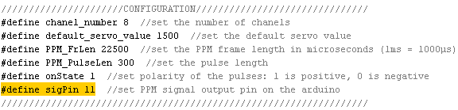

Самодельный приемник FlySky.
13 апр. 2016 г., 10:58:41 | Александр Сафроненко, Санкт-Петербург
7105, arduino, diy, flysky, receiver, ардуино, приемник, самодельный
+92
VKOdnoklassnikiMail.RuWhatsAppFacebookTwittergoogle_plusРесурс
Хочу рассказать об одном интересном открытом проекте приемника и передатчика с протоколом FlySky. Этот протокол используется в популярной аппаратуре Turnigy 9X и некоторых пультах фирмы FlySky. Кроме того, они сохранили поддержку этого протокола в новых версиях пультов, и старые приемники будут работать с ними.
Большинство электроники, которой я пользуюсь в нашем хобби, у меня либо самодельная, либо допиленная до моих требований. И наткнулся я на этот проект когда искал открытый и простой проект для управления моделями на небольших расстояних, требования были простые - доступные компоненты, минимум пайки, низкая себистоимость. Выбор пал на проект на рцгрупс http://www.rcgroups.com/forums/showthread.php?t=1921870.
Коллеги предлагают законченное решение - и приемник и передатчик на ардуинке и радиомодулях соотв. мощности - 50мВт для передатчика и 1мВт для приемника на базе чипа A7105. Этого вполне достаточно, чтобы управлять моделями на расстоянии 300-400 метров, т.е. в пределах видимости, как я и хотел.
Кроме того что проект полностью повторяет оригинальный функционал флайскай, добавлена поддержка ппмсум сигнала, вывод которого включается перемычкой между каналов и фиксированный фэйлсейв
Заказал модули и, когда они пришли, быстренько собрал приемник и передатчик. Фото того самого приемника из ардуинки, модуля и куска сервоудлиннителя:
В пульт пошел передатчик собранный из ардуинки и модуля на 50мВт, обмотанный спец. скотчем, изначально он был в красивой термоусадке, но после многочисленных экспериметров и пересадок из одного пульта в другой он обрел окончательный вид =). Для питания было необходимо найти 3.3В в пульте, но позже я решил поставить отдельный дц-дц преобразователь. Всем рекомендую добавлять по конденсатору емкостью хотябы 100мкф на входе и выходе, на таких китайских модулях стоит необходимымый минимум чтобы оно работало, но шумы от него идут в обе стороны:
Mini DC-DC Converter Adjustable Step Down Power Supply Module
Товар http://www.parkflyer.ru/ru/product/1692636/
Модуль в желтом скотче, от него антенна идет в ручку пульта. В синей термоусадке модуль дц-дц с конденсаторами.
Тумблер для включения и выключения свободно разместился в батарейном отсеке
Попробовал прошивки, всё заработало сразу. Ну и если передатчик ещё без разницы как делать, то приемник на соплях в самолет пихать не хотелось, так что быстренько развел платку и заказал изготовление.
Итого получилось 2 приемника, на 4 и 8 каналов, всё заработало сразу, проблем особых не возникло пока...
Пока я не решил полетать! Связь с оригинальным пультом турниджи терялась на расстоянии уже около 100-150 метров и восстанавливалась очень долго, с самодельным передатчиком в моем пульте расстояние было побольше, но всё равно были потери сигнала и восстановление занимало много времени. Надо было искать проблему, так что я взял у друга приемник Turnigy 9X8C, свой спаянный приемник, подключил к логическому анализатору и принялся за отладку.
Проблема оказалась в прошивке приемника, он не мог нормально синхронизироваться с передатчиком при потере одиночного пакета и абсолютно неправильно пытался восстановить связь. После исправления ошибок полеты продолжились, связь стала нормальной. Для теста друг запихал свой пульт в микроволновку (которая отлично гасит сигнал на 2.4Ггц) и ушел с приемнком из квартиры, 3-4 кирпичных стены пробивало.
Позже к приемнику была припаяна нормальная антенна, с новой антенной чувствительность немного возросла. Найдена ещё пара ошибок, в том числе с фэйлсэйвом. Сейчас приемники стоят и на коптерах и на самолетах, чувствуют себя хорошо =)
Помимо ошибок в прошивке по ходу эксплуатации были дополнения и в железе. По питанию пришлось добавить конденсатор (изначально я хотел использовать приемники только для ппмсум сигнала, там хватало конденсатора на плате, но от 3-4 9-ти граммовых серв помехи уже могут мешать работе приемника). И последнее исправление это сделать подтяжку резистором на канале бинда - встроенной подтяжки микроконтроллера не хватало, серва срабатывала как бинд перемычка, на оригинальной схеме этот резистор обозначен как необязательный, но ставить его я настоятельно рекомендую.
Немного расскажу про прошивку и как её модифицировать под свои нужды.
Бинд реализован стандартной перемычкой, в оригинальном проекте изначально использовался 9-ый псевдоканал, только для бинда, позже появилась прошивка которая может использовать восьмой канал для этого. Для включения ппмсум сигнала необходимо замкнуть два канала, тогда на определенном канале появится ппмсум. Проект написан в среде Arduino IDE и расчитан на микроконтроллеры ATMega48/88/168/328, которые стоят в популярных Arduino UNO, pro mini и прочих.
Итак, пройдемся по исходнику.
Конфигурация пинов задается в начале дефайнами, пример для моего 4-х канального применика. Так же здесь указан пин который будет использован для бинда.
Отдельно задается пин для вывода ппмсум:

Пины которые надо замыкать отдельно не вынесены и их придется менять прямо в коде. В данном примере надо замыкать первый и третий каналы, чтобы поменять на другие каналы надо просто поменять все упоминания Servo1_OUT и Servo3_OUT на желаемые в этом куске кода:
Самое неприятное менять значения фэйлсэйв по умолчанию, это надо делать в двух местах. Сначала константа, это значения при старте:
И в кусок кода, который ставит в третий канал (второй если считать с нуля!) в 1000мс, остальные в 1500мс:
Ну и для желающих повторить, выкладываю исправленную прошивку для приемника. В ней надо поправить намера пинов на которые выводяться каналы (у меня отличается от оригинала) и можно изменить номера каналов которые надо замыкать для получения ппмсум (так же я менял под себя).
(Rx_arduino_ppm_all_FS_complete.zip)
Схемы и разводка печатных плат в формате программы диптрейс, для таких небольших плат она бесплатна и работает под линуксом через вайн без проблем. Большинство номиналов отсутстыет, в выходные подпишу и перезалью файлы.
(flysky.zip)
Модули которые я использовал:
A7105 Wireless RF 2.4GHz Transceiver Module for Walkera Transmitter
Товар http://www.parkflyer.ru/ru/product/1562348/хотя есть такой-же дешевле:
XL7105-D03 A7105 Modification Module Support Deviation Galee Flysky
Товар http://www.parkflyer.ru/ru/product/1688334/и для приемника:
A7105 XL7105-SY-B 2.4G Wireless Transceiver Module
Товар http://www.parkflyer.ru/ru/product/1688331/Ну и ардуинка:
Pro Mini ATMEGA328P 5V/16M Improved Version Module For Arduino
Товар http://www.parkflyer.ru/ru/product/1896793/
Удачных полетов!